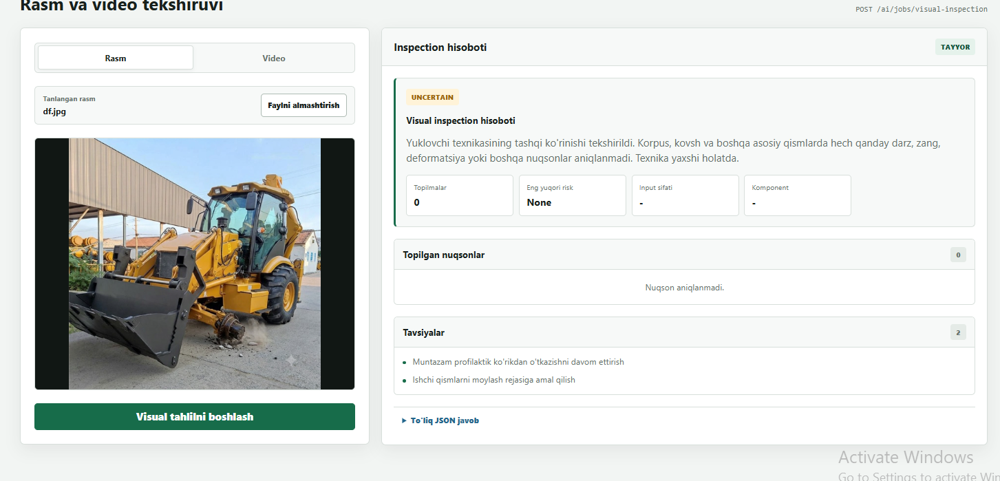
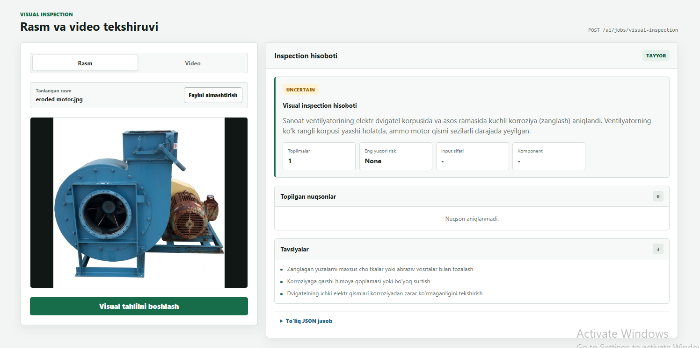
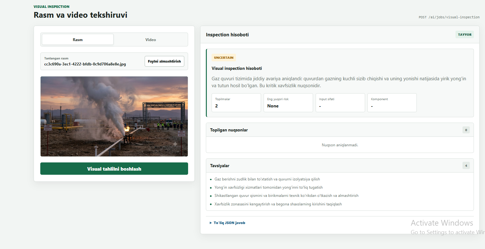

Vizual tekshiruv
Uskunaning rasmi yoki videosi yuklanadi — tizim undagi nuqsonlarni topadi: zang, oqish, yoriq, shikastlanish. Har nuqson uchun qayerdaligi, qanchalik jiddiyligi va videoda qaysi soniyada ko'ringani ko'rsatiladi.
Maqsad
Nima muammoni hal qiladi.
Ko'rik paytida xodim uskunani aylanib chiqadi va ko'rganini yozib qo'yadi. Tajribasiz xodim boshlanayotgan korroziyani e'tiborsiz qoldiradi, tajribalisi esa har safar bir xil tafsilotni qayta yozadi.
Bu yerda telefonda suratga olish yetarli. Tizim nuqsonni topadi, toifalaydi va jiddiyligini baholaydi. Eng muhimi — shubhali holatda u «nuqson» deb qat'iy aytmaydi: soya yoki kirlikni zang deb ko'rsatish ishonchni yo'qotadi, shuning uchun muqobil izoh ham yoziladi.
Ishlash WorkFlow
Tugun ustiga bosing — nima qilishi haqida qisqa ma'lumot chiqadi.
Namunalar


